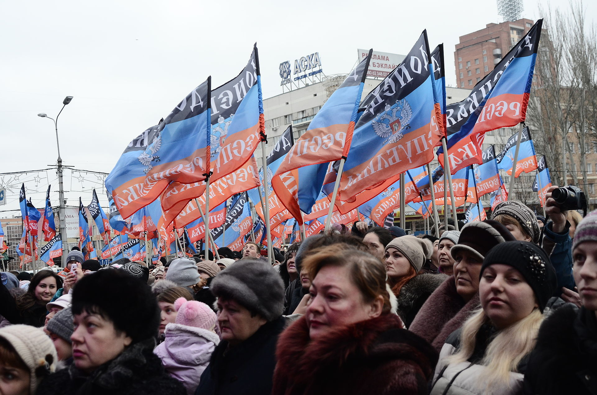

El término conflictos postsoviéticos se refiere en conjunto a todos los conflictos, guerras y crisis que se
desarrollaron o vienen desarrollándose en torno a los Estados que nacieron de la disolución de la Unión
Soviética en 1991.

Separatismo en Ucrania, un ejemplo de conflicto postsoviético específico. En la imagen protestas a
favor de la República Popular de Donetsk.